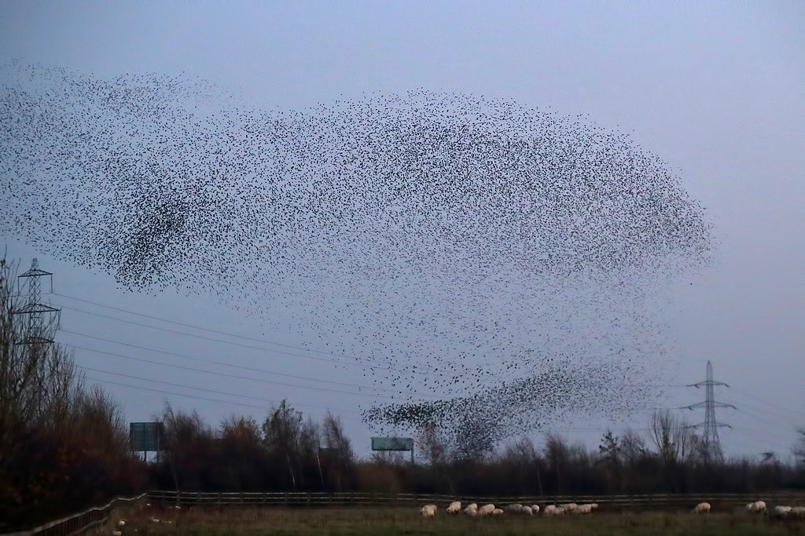

There are two things going on here. The dots are Particle Life: a hundred thousand of them on your GPU, each following one rule about which colors to chase and which to run from. That rule by itself is enough to grow cells, chains, and blobs that move like they're alive. The second thing is the part I added, the ghost.

{kind=link}
An invisible hand
Watch for a bit and you'll see the whole swarm settle into a shape, hold it, then melt and form the next one. That's a hidden flow field I laid over the simulation. It keeps cycling through patterns, spirals, mandalas, that sort of thing, like an old Winamp visualizer drifting from one scene to the next.
The trick is that each pattern pushes the particles along its lines instead of straight at them (a curl field). So the swarm flows around the shape and keeps doing its own thing while it traces it, instead of all clumping into a few dots.
Builds on Ventrella's Clusters, Tom Mohr's Particle Life, and lisyarus's WebGPU port; the ghost is the piece I added. Source: particle-life.js.